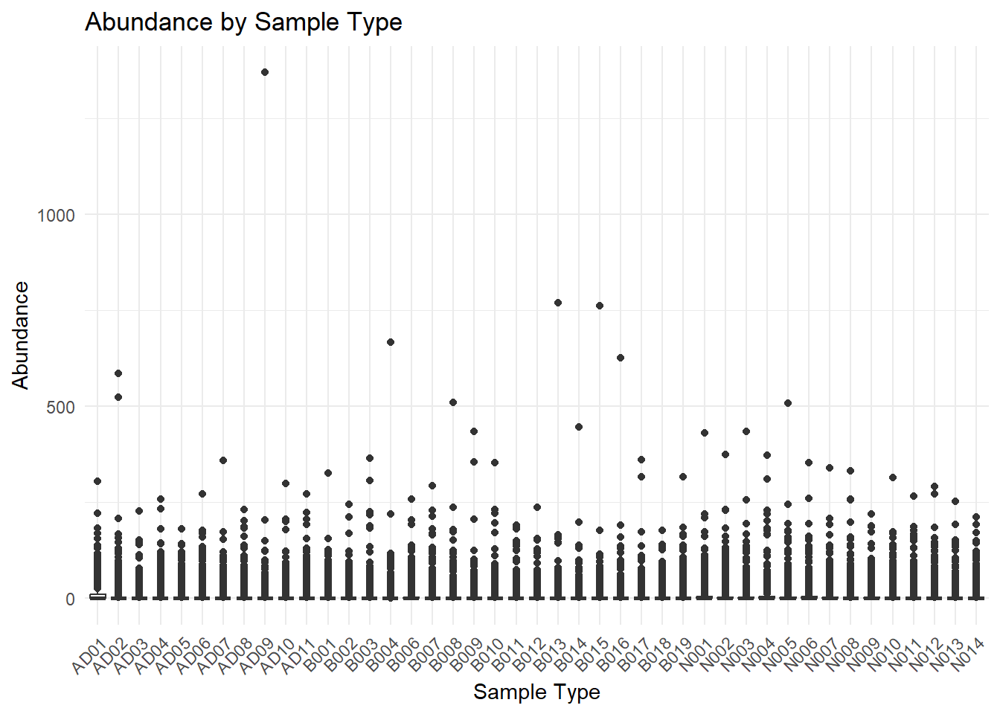
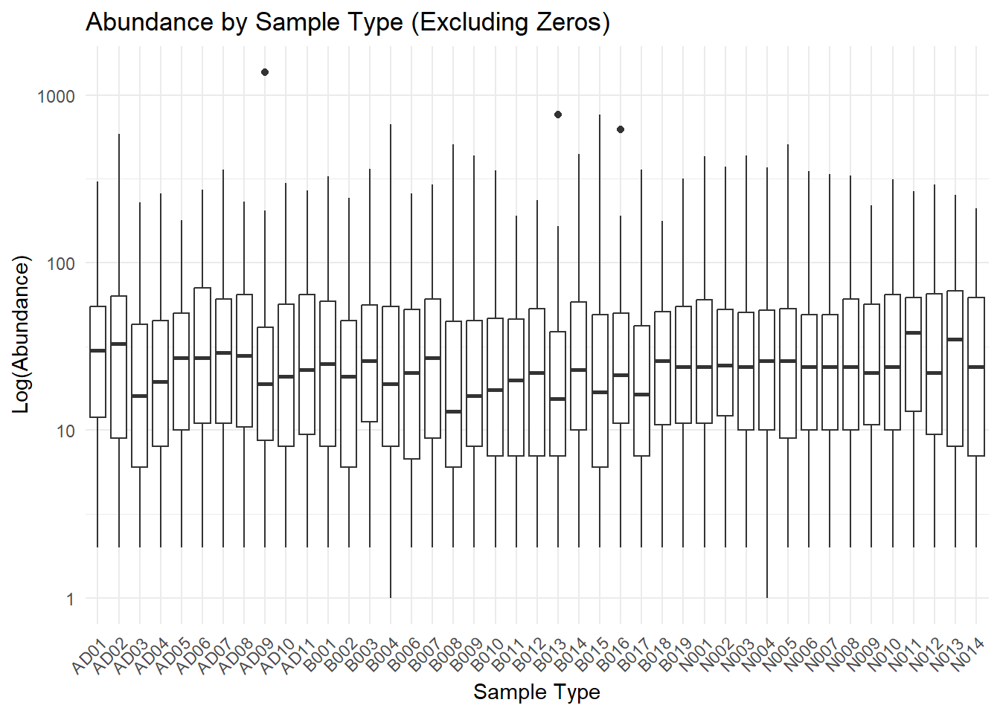

library(readr)
data<- read.csv(file='otu_table_no_chim.csv',header=TRUE,sep=',')
str(data)## 'data.frame': 523 obs. of 44 variables:
## $ X.OTU.ID : chr "d__Bacteria;p__Campilobacterota;c__Campylobacteria;o__Campylobacterales;f__Arcobacteraceae;g__Arcobacter" "d__Bacteria;p__Spirochaetota;c__Spirochaetia;o__Spirochaetales;f__Spirochaetaceae;g__uncultured" "d__Bacteria;p__Proteobacteria;c__Gammaproteobacteria;o__Burkholderiales;f__Rhodocyclaceae;__" "d__Bacteria;p__Chloroflexi;c__Anaerolineae;o__SBR1031;f__SBR1031;g__SBR1031" ...
## $ X2280.046.AD01: int 86 83 29 26 100 83 222 0 49 0 ...
## $ X2280.047.AD07: int 0 46 14 0 153 55 78 0 0 28 ...
## $ X2280.048.B001: int 79 34 65 78 326 59 64 0 35 16 ...
## $ X2280.049.B007: int 108 7 61 95 293 69 170 0 28 213 ...
## $ X2280.050.B013: int 769 52 156 76 146 162 75 22 0 79 ...
## $ X2280.051.B019: int 167 50 84 0 138 133 317 0 43 58 ...
## $ X2280.052.N006: int 41 195 107 120 67 48 353 0 37 0 ...
## $ X2280.053.N012: int 68 70 77 0 125 146 271 47 28 76 ...
## $ X2280.054.AD02: int 5 0 35 122 0 0 207 0 31 57 ...
## $ X2280.055.AD08: int 162 84 0 0 0 0 131 0 0 3 ...
## $ X2280.056.B002: int 123 42 82 57 212 63 76 36 22 23 ...
## $ X2280.057.B008: int 236 107 74 152 509 98 173 37 27 45 ...
## $ X2280.058.B014: int 445 14 92 0 0 198 36 0 0 26 ...
## $ X2280.059.N001: int 0 106 5 91 0 0 430 46 51 47 ...
## $ X2280.060.N007: int 2 66 165 139 44 0 339 0 50 0 ...
## $ X2280.061.N013: int 0 151 0 0 98 102 136 0 0 68 ...
## $ X2280.062.AD03: int 56 0 151 0 0 78 8 0 16 0 ...
## $ X2280.063.AD09: int 1369 29 84 0 85 0 150 0 0 0 ...
## $ X2280.064.B003: int 0 0 121 121 182 0 364 52 0 0 ...
## $ X2280.065.B009: int 435 9 124 91 355 84 66 10 0 84 ...
## $ X2280.066.B015: int 762 74 108 0 0 177 54 17 62 95 ...
## $ X2280.067.N002: int 0 98 52 51 31 33 375 59 41 0 ...
## $ X2280.068.N008: int 0 117 113 17 49 21 257 48 21 19 ...
## $ X2280.069.N014: int 38 79 6 0 38 20 88 10 76 40 ...
## $ X2280.070.AD04: int 44 65 10 0 0 25 18 0 21 0 ...
## $ X2280.071.AD10: int 123 79 54 0 79 42 299 0 34 0 ...
## $ X2280.072.B004: int 667 106 117 0 0 219 115 29 0 3 ...
## $ X2280.073.B010: int 232 57 354 3 171 21 197 0 73 111 ...
## $ X2280.074.B016: int 626 76 95 11 0 99 83 47 12 56 ...
## $ X2280.075.N003: int 0 128 27 76 39 7 434 27 65 0 ...
## $ X2280.076.N009: int 0 131 189 0 28 0 99 131 28 80 ...
## $ X2280.077.AD06: int 78 22 15 0 122 57 160 0 0 0 ...
## $ X2280.078.AD05: int 66 51 90 0 45 0 139 2 0 0 ...
## $ X2280.079.AD11: int 24 90 77 0 64 42 193 0 0 0 ...
## $ X2280.081.B011: int 96 35 180 0 74 126 142 101 5 149 ...
## $ X2280.082.B017: int 360 46 53 0 0 316 52 35 0 34 ...
## $ X2280.083.N004: int 0 166 53 73 24 20 372 112 73 17 ...
## $ X2280.084.N010: int 0 158 141 0 74 0 129 107 32 56 ...
## $ X2280.085.B006: int 108 91 55 126 259 130 106 42 0 91 ...
## $ X2280.086.B012: int 236 92 155 54 48 151 156 24 2 119 ...
## $ X2280.087.B018: int 134 34 81 0 26 141 95 14 0 40 ...
## $ X2280.088.N005: int 0 154 42 38 3 10 507 126 56 0 ...
## $ X2280.089.N011: int 50 86 71 0 0 0 111 39 44 30 ...head(data)## X.OTU.ID
## 1 d__Bacteria;p__Campilobacterota;c__Campylobacteria;o__Campylobacterales;f__Arcobacteraceae;g__Arcobacter
## 2 d__Bacteria;p__Spirochaetota;c__Spirochaetia;o__Spirochaetales;f__Spirochaetaceae;g__uncultured
## 3 d__Bacteria;p__Proteobacteria;c__Gammaproteobacteria;o__Burkholderiales;f__Rhodocyclaceae;__
## 4 d__Bacteria;p__Chloroflexi;c__Anaerolineae;o__SBR1031;f__SBR1031;g__SBR1031
## 5 d__Bacteria;p__Proteobacteria;c__Gammaproteobacteria;o__Pseudomonadales;f__Pseudomonadaceae;g__Pseudomonas
## 6 d__Bacteria;p__Proteobacteria;c__Gammaproteobacteria;o__Pseudomonadales;f__Moraxellaceae;g__Acinetobacter
## X2280.046.AD01 X2280.047.AD07 X2280.048.B001 X2280.049.B007 X2280.050.B013
## 1 86 0 79 108 769
## 2 83 46 34 7 52
## 3 29 14 65 61 156
## 4 26 0 78 95 76
## 5 100 153 326 293 146
## 6 83 55 59 69 162
## X2280.051.B019 X2280.052.N006 X2280.053.N012 X2280.054.AD02 X2280.055.AD08
## 1 167 41 68 5 162
## 2 50 195 70 0 84
## 3 84 107 77 35 0
## 4 0 120 0 122 0
## 5 138 67 125 0 0
## 6 133 48 146 0 0
## X2280.056.B002 X2280.057.B008 X2280.058.B014 X2280.059.N001 X2280.060.N007
## 1 123 236 445 0 2
## 2 42 107 14 106 66
## 3 82 74 92 5 165
## 4 57 152 0 91 139
## 5 212 509 0 0 44
## 6 63 98 198 0 0
## X2280.061.N013 X2280.062.AD03 X2280.063.AD09 X2280.064.B003 X2280.065.B009
## 1 0 56 1369 0 435
## 2 151 0 29 0 9
## 3 0 151 84 121 124
## 4 0 0 0 121 91
## 5 98 0 85 182 355
## 6 102 78 0 0 84
## X2280.066.B015 X2280.067.N002 X2280.068.N008 X2280.069.N014 X2280.070.AD04
## 1 762 0 0 38 44
## 2 74 98 117 79 65
## 3 108 52 113 6 10
## 4 0 51 17 0 0
## 5 0 31 49 38 0
## 6 177 33 21 20 25
## X2280.071.AD10 X2280.072.B004 X2280.073.B010 X2280.074.B016 X2280.075.N003
## 1 123 667 232 626 0
## 2 79 106 57 76 128
## 3 54 117 354 95 27
## 4 0 0 3 11 76
## 5 79 0 171 0 39
## 6 42 219 21 99 7
## X2280.076.N009 X2280.077.AD06 X2280.078.AD05 X2280.079.AD11 X2280.081.B011
## 1 0 78 66 24 96
## 2 131 22 51 90 35
## 3 189 15 90 77 180
## 4 0 0 0 0 0
## 5 28 122 45 64 74
## 6 0 57 0 42 126
## X2280.082.B017 X2280.083.N004 X2280.084.N010 X2280.085.B006 X2280.086.B012
## 1 360 0 0 108 236
## 2 46 166 158 91 92
## 3 53 53 141 55 155
## 4 0 73 0 126 54
## 5 0 24 74 259 48
## 6 316 20 0 130 151
## X2280.087.B018 X2280.088.N005 X2280.089.N011
## 1 134 0 50
## 2 34 154 86
## 3 81 42 71
## 4 0 38 0
## 5 26 3 0
## 6 141 10 0#defining columns
column_names<-colnames(data)
print(column_names)## [1] "X.OTU.ID" "X2280.046.AD01" "X2280.047.AD07" "X2280.048.B001"
## [5] "X2280.049.B007" "X2280.050.B013" "X2280.051.B019" "X2280.052.N006"
## [9] "X2280.053.N012" "X2280.054.AD02" "X2280.055.AD08" "X2280.056.B002"
## [13] "X2280.057.B008" "X2280.058.B014" "X2280.059.N001" "X2280.060.N007"
## [17] "X2280.061.N013" "X2280.062.AD03" "X2280.063.AD09" "X2280.064.B003"
## [21] "X2280.065.B009" "X2280.066.B015" "X2280.067.N002" "X2280.068.N008"
## [25] "X2280.069.N014" "X2280.070.AD04" "X2280.071.AD10" "X2280.072.B004"
## [29] "X2280.073.B010" "X2280.074.B016" "X2280.075.N003" "X2280.076.N009"
## [33] "X2280.077.AD06" "X2280.078.AD05" "X2280.079.AD11" "X2280.081.B011"
## [37] "X2280.082.B017" "X2280.083.N004" "X2280.084.N010" "X2280.085.B006"
## [41] "X2280.086.B012" "X2280.087.B018" "X2280.088.N005" "X2280.089.N011"#finding column sums
colSums(data[,-1], na.rm=TRUE, dims=1)## X2280.046.AD01 X2280.047.AD07 X2280.048.B001 X2280.049.B007 X2280.050.B013
## 7028 4889 4858 5009 3831
## X2280.051.B019 X2280.052.N006 X2280.053.N012 X2280.054.AD02 X2280.055.AD08
## 4421 5944 5174 5500 4547
## X2280.056.B002 X2280.057.B008 X2280.058.B014 X2280.059.N001 X2280.060.N007
## 3868 4229 3343 6210 5612
## X2280.061.N013 X2280.062.AD03 X2280.063.AD09 X2280.064.B003 X2280.065.B009
## 4164 3252 4393 4746 3174
## X2280.066.B015 X2280.067.N002 X2280.068.N008 X2280.069.N014 X2280.070.AD04
## 3630 6029 5269 4132 4379
## X2280.071.AD10 X2280.072.B004 X2280.073.B010 X2280.074.B016 X2280.075.N003
## 4524 4069 4329 4332 5495
## X2280.076.N009 X2280.077.AD06 X2280.078.AD05 X2280.079.AD11 X2280.081.B011
## 5177 5449 4522 4490 4015
## X2280.082.B017 X2280.083.N004 X2280.084.N010 X2280.085.B006 X2280.086.B012
## 3717 6381 5530 5004 3396
## X2280.087.B018 X2280.088.N005 X2280.089.N011
## 3081 6125 5106#finding column means
colMeans(data[,-1], na.rm=TRUE, dims=1)## X2280.046.AD01 X2280.047.AD07 X2280.048.B001 X2280.049.B007 X2280.050.B013
## 13.437859 9.347992 9.288719 9.577438 7.325048
## X2280.051.B019 X2280.052.N006 X2280.053.N012 X2280.054.AD02 X2280.055.AD08
## 8.453155 11.365201 9.892925 10.516252 8.694073
## X2280.056.B002 X2280.057.B008 X2280.058.B014 X2280.059.N001 X2280.060.N007
## 7.395793 8.086042 6.391969 11.873805 10.730402
## X2280.061.N013 X2280.062.AD03 X2280.063.AD09 X2280.064.B003 X2280.065.B009
## 7.961759 6.217973 8.399618 9.074570 6.068834
## X2280.066.B015 X2280.067.N002 X2280.068.N008 X2280.069.N014 X2280.070.AD04
## 6.940727 11.527725 10.074570 7.900574 8.372849
## X2280.071.AD10 X2280.072.B004 X2280.073.B010 X2280.074.B016 X2280.075.N003
## 8.650096 7.780115 8.277247 8.282983 10.506692
## X2280.076.N009 X2280.077.AD06 X2280.078.AD05 X2280.079.AD11 X2280.081.B011
## 9.898662 10.418738 8.646272 8.585086 7.676864
## X2280.082.B017 X2280.083.N004 X2280.084.N010 X2280.085.B006 X2280.086.B012
## 7.107075 12.200765 10.573614 9.567878 6.493308
## X2280.087.B018 X2280.088.N005 X2280.089.N011
## 5.891013 11.711281 9.762906#converting to long data
library(tidyverse)## ── Attaching core tidyverse packages ───────────── tidyverse 2.0.0 ──
## ✔ dplyr 1.1.4 ✔ purrr 1.0.2
## ✔ forcats 1.0.0 ✔ stringr 1.5.1
## ✔ ggplot2 3.5.1 ✔ tibble 3.2.1
## ✔ lubridate 1.9.4 ✔ tidyr 1.3.1
## ── Conflicts ─────────────────────────────── tidyverse_conflicts() ──
## ✖ dplyr::filter() masks stats::filter()
## ✖ dplyr::lag() masks stats::lag()
## ℹ Use the conflicted package (<http://conflicted.r-lib.org/>) to force all conflicts to become errorslibrary(dplyr)
library(stringr)
data_long <- data %>%
pivot_longer(cols = starts_with("X2280"), # This will select all columns that start with "X2280"
names_to = "Sample_ID", # The new column for sample identifiers
values_to = "Abundance") # The new column for abundance values
data_long$Sample_ID <- as.character(data_long$Sample_ID)
data_long <- data_long %>%
mutate(Sample_Type = sapply(strsplit(Sample_ID, "\\."), function(x) x[3]))
head(data_long)## # A tibble: 6 × 4
## X.OTU.ID Sample_ID Abundance Sample_Type
## <chr> <chr> <int> <chr>
## 1 d__Bacteria;p__Campilobacterota;c__Campylobac… X2280.04… 86 AD01
## 2 d__Bacteria;p__Campilobacterota;c__Campylobac… X2280.04… 0 AD07
## 3 d__Bacteria;p__Campilobacterota;c__Campylobac… X2280.04… 79 B001
## 4 d__Bacteria;p__Campilobacterota;c__Campylobac… X2280.04… 108 B007
## 5 d__Bacteria;p__Campilobacterota;c__Campylobac… X2280.05… 769 B013
## 6 d__Bacteria;p__Campilobacterota;c__Campylobac… X2280.05… 167 B019#Attempting ANOVA analysis
library(ggplot2)
anova_result<- aov(Abundance~Sample_Type, data=data_long)
summary(anova_result)## Df Sum Sq Mean Sq F value Pr(>F)
## Sample_Type 42 70627 1681.6 1.721 0.00256 **
## Residuals 22446 21937511 977.3
## ---
## Signif. codes: 0 '***' 0.001 '**' 0.01 '*' 0.05 '.' 0.1 ' ' 1The first ANOVA analysis was done by first converting my wide data to a long data type. This allowed to run an ANOVA analysis between sample type and abundance. This yielded a low P value of 0.00256 (<0.05) which infers that there is low probability of random differences in abundance due to sample type. In other words, the sample type appears to have an effect on the abundance.
# Create a boxplot of Abundance by Sample_Type
ggplot(data_long, aes(x = Sample_Type, y = Abundance, group=Sample_Type)) +
geom_boxplot() +
theme_minimal() +
labs(title = "Abundance by Sample Type",
x = "Sample Type",
y = "Abundance") +
theme(axis.text.x = element_text(angle = 45, hjust = 1)) # Rotate x-axis labels if needed
#Trying to filter out 0s to make plot more attractive
data_long_filtered <- data_long %>% filter(Abundance > 0)
# Boxplot without 0s
ggplot(data_long_filtered, aes(x = Sample_Type, y = Abundance)) +
geom_boxplot() +
scale_y_log10()+
theme_minimal() +
labs(title = "Abundance by Sample Type (Excluding Zeros)",
x = "Sample Type",
y = "Log(Abundance)") +
theme(axis.text.x = element_text(angle = 45, hjust = 1)) # Rotate x-axis labels if needed This graph seems somewhat intriguing. I removed 0s since there are so many that it skewed the boxes towards 0, and I also put the y-axis in log form to make the boxes larger, and more dinstinct.
What is neat, is that there exist a pattern for the ‘ADxx’ samples that shows a fluctuating abundance. A potential reason for this may be due to the bioreactor’s feed stock. The input is Cabot cheese waste that contains a sizeable amount of bleach and cleaning products. I need to check into the metadata, but it appears for sample type ‘ADxx’ there are times when the abundance drops down, it would be neat if this aligns with replenishing the reactor with bleach.
#Attempting for loops for iterating over smaller sample size
for (i in seq(from=1,to=200, by=10)){
subset_data <- data_long[10*i:(10*i+10), ]
anova_model <- aov(Abundance ~ Sample_Type, data = subset_data)
print(summary(anova_model))
}## Df Sum Sq Mean Sq
## Sample_Type 19 230731 12144
## Df Sum Sq Mean Sq F value Pr(>F)
## Sample_Type 42 201733 4803 0.738 0.854
## Residuals 67 436191 6510
## Df Sum Sq Mean Sq F value Pr(>F)
## Sample_Type 42 225572 5371 1.214 0.198
## Residuals 157 694820 4426
## Df Sum Sq Mean Sq F value Pr(>F)
## Sample_Type 42 133919 3189 1.284 0.126
## Residuals 247 613393 2483
## Df Sum Sq Mean Sq F value Pr(>F)
## Sample_Type 42 115663 2754 1.26 0.138
## Residuals 337 736501 2186
## Df Sum Sq Mean Sq F value Pr(>F)
## Sample_Type 42 104946 2499 1.305 0.103
## Residuals 427 817804 1915
## Df Sum Sq Mean Sq F value Pr(>F)
## Sample_Type 42 84305 2007 1.121 0.283
## Residuals 517 926008 1791
## Df Sum Sq Mean Sq F value Pr(>F)
## Sample_Type 42 78815 1877 1.16 0.231
## Residuals 607 981833 1618
## Df Sum Sq Mean Sq F value Pr(>F)
## Sample_Type 42 65456 1558 1.068 0.36
## Residuals 697 1017567 1460
## Df Sum Sq Mean Sq F value Pr(>F)
## Sample_Type 42 58499 1393 1.04 0.404
## Residuals 787 1054041 1339
## Df Sum Sq Mean Sq F value Pr(>F)
## Sample_Type 42 45120 1074 0.957 0.55
## Residuals 877 984027 1122
## Df Sum Sq Mean Sq F value Pr(>F)
## Sample_Type 42 42940 1022 0.996 0.48
## Residuals 967 992412 1026
## Df Sum Sq Mean Sq F value Pr(>F)
## Sample_Type 42 40716 969.4 1.099 0.309
## Residuals 1057 932533 882.2
## Df Sum Sq Mean Sq F value Pr(>F)
## Sample_Type 42 37287 887.8 1.08 0.338
## Residuals 1147 942944 822.1
## Df Sum Sq Mean Sq F value Pr(>F)
## Sample_Type 42 34502 821.5 1.091 0.321
## Residuals 1237 931470 753.0
## Df Sum Sq Mean Sq F value Pr(>F)
## Sample_Type 42 28654 682.2 1.063 0.364
## Residuals 1327 851444 641.6
## Df Sum Sq Mean Sq F value Pr(>F)
## Sample_Type 42 27264 649.1 1.195 0.185
## Residuals 1417 769574 543.1
## Df Sum Sq Mean Sq F value Pr(>F)
## Sample_Type 42 24265 577.7 1.259 0.125
## Residuals 1507 691352 458.8
## Df Sum Sq Mean Sq F value Pr(>F)
## Sample_Type 42 20957 499.0 1.17 0.213
## Residuals 1597 681157 426.5
## Df Sum Sq Mean Sq F value Pr(>F)
## Sample_Type 42 16697 397.5 1.068 0.356
## Residuals 1687 628131 372.3for (i in seq(from=1,to=200, by=20)){
subset_data <- data_long[10*i:(10*i+10), ]
anova_model <- aov(Abundance ~ Sample_Type, data = subset_data)
print(summary(anova_model))
}## Df Sum Sq Mean Sq
## Sample_Type 19 230731 12144
## Df Sum Sq Mean Sq F value Pr(>F)
## Sample_Type 42 225572 5371 1.214 0.198
## Residuals 157 694820 4426
## Df Sum Sq Mean Sq F value Pr(>F)
## Sample_Type 42 115663 2754 1.26 0.138
## Residuals 337 736501 2186
## Df Sum Sq Mean Sq F value Pr(>F)
## Sample_Type 42 84305 2007 1.121 0.283
## Residuals 517 926008 1791
## Df Sum Sq Mean Sq F value Pr(>F)
## Sample_Type 42 65456 1558 1.068 0.36
## Residuals 697 1017567 1460
## Df Sum Sq Mean Sq F value Pr(>F)
## Sample_Type 42 45120 1074 0.957 0.55
## Residuals 877 984027 1122
## Df Sum Sq Mean Sq F value Pr(>F)
## Sample_Type 42 40716 969.4 1.099 0.309
## Residuals 1057 932533 882.2
## Df Sum Sq Mean Sq F value Pr(>F)
## Sample_Type 42 34502 821.5 1.091 0.321
## Residuals 1237 931470 753.0
## Df Sum Sq Mean Sq F value Pr(>F)
## Sample_Type 42 27264 649.1 1.195 0.185
## Residuals 1417 769574 543.1
## Df Sum Sq Mean Sq F value Pr(>F)
## Sample_Type 42 20957 499.0 1.17 0.213
## Residuals 1597 681157 426.5for (i in seq(from=1,to=200, by=50)){
subset_data <- data_long[10*i:(10*i+10), ]
anova_model <- aov(Abundance ~ Sample_Type, data = subset_data)
print(summary(anova_model))
}## Df Sum Sq Mean Sq
## Sample_Type 19 230731 12144
## Df Sum Sq Mean Sq F value Pr(>F)
## Sample_Type 42 104946 2499 1.305 0.103
## Residuals 427 817804 1915
## Df Sum Sq Mean Sq F value Pr(>F)
## Sample_Type 42 45120 1074 0.957 0.55
## Residuals 877 984027 1122
## Df Sum Sq Mean Sq F value Pr(>F)
## Sample_Type 42 28654 682.2 1.063 0.364
## Residuals 1327 851444 641.6for (i in seq(from=1,to=500, by=50)){
subset_data <- data_long[10*i:(10*i+10), ]
anova_model <- aov(Abundance ~ Sample_Type, data = subset_data)
print(summary(anova_model))
}## Df Sum Sq Mean Sq
## Sample_Type 19 230731 12144
## Df Sum Sq Mean Sq F value Pr(>F)
## Sample_Type 42 104946 2499 1.305 0.103
## Residuals 427 817804 1915
## Df Sum Sq Mean Sq F value Pr(>F)
## Sample_Type 42 45120 1074 0.957 0.55
## Residuals 877 984027 1122
## Df Sum Sq Mean Sq F value Pr(>F)
## Sample_Type 42 28654 682.2 1.063 0.364
## Residuals 1327 851444 641.6
## Df Sum Sq Mean Sq F value Pr(>F)
## Sample_Type 42 16139 384.3 1.112 0.288
## Residuals 1777 613913 345.5
## Df Sum Sq Mean Sq F value Pr(>F)
## Sample_Type 42 13129 312.6 1.167 0.216
## Residuals 1955 523745 267.9
## 272 observations deleted due to missingness
## Df Sum Sq Mean Sq F value Pr(>F)
## Sample_Type 42 9362 222.9 1.113 0.286
## Residuals 1905 381487 200.3
## 772 observations deleted due to missingness
## Df Sum Sq Mean Sq F value Pr(>F)
## Sample_Type 42 7350 175.0 1.068 0.355
## Residuals 1855 303953 163.9
## 1272 observations deleted due to missingness
## Df Sum Sq Mean Sq F value Pr(>F)
## Sample_Type 42 6432 153.1 1.036 0.408
## Residuals 1805 266770 147.8
## 1772 observations deleted due to missingness
## Df Sum Sq Mean Sq F value Pr(>F)
## Sample_Type 42 5031 119.8 0.893 0.668
## Residuals 1755 235502 134.2
## 2272 observations deleted due to missingnessfor (i in seq(from=1,to=500, by=100)){
subset_data <- data_long[10*i:(10*i+10), ]
anova_model <- aov(Abundance ~ Sample_Type, data = subset_data)
print(summary(anova_model))
}## Df Sum Sq Mean Sq
## Sample_Type 19 230731 12144
## Df Sum Sq Mean Sq F value Pr(>F)
## Sample_Type 42 45120 1074 0.957 0.55
## Residuals 877 984027 1122
## Df Sum Sq Mean Sq F value Pr(>F)
## Sample_Type 42 16139 384.3 1.112 0.288
## Residuals 1777 613913 345.5
## Df Sum Sq Mean Sq F value Pr(>F)
## Sample_Type 42 9362 222.9 1.113 0.286
## Residuals 1905 381487 200.3
## 772 observations deleted due to missingness
## Df Sum Sq Mean Sq F value Pr(>F)
## Sample_Type 42 6432 153.1 1.036 0.408
## Residuals 1805 266770 147.8
## 1772 observations deleted due to missingnessfor (i in seq(from=1,to=500, by=500)){
subset_data <- data_long[10*i:500, ]
anova_model <- aov(Abundance ~ Sample_Type, data = subset_data)
print(summary(anova_model))
}## Df Sum Sq Mean Sq F value Pr(>F)
## Sample_Type 42 143220 3410 1.035 0.416
## Residuals 457 1506224 3296As seen in the outputs for my for loops above, running the anova analysis on smaller samples greatly impacts the results. For instance, when running the anova on the entire sample set, the P-value was 0.00256, significantly less than 0.05. This infers that the sample type does indeed have an impact on the abundances of species. In my for loops I shrunk the size/rows being interrogated. To start I tried the anova with 10 samples at a time, and it yielded p values greater than 0.05 for each iteration. Taking this at face values makes it seem that the sample type does not significantly effect the abundance. I tried several different subsets to run the anova on, and as the size got larger the p value did reduce, but it did not get as low as it did for the entire data set. This leads me to believe that it is critical to factor in as large of a sample as possible to get significant results.
#attempting to shorten the taxas to a plotable length
library(dplyr)
library(stringr)
data_long <- data_long %>%
mutate(Taxa_Abbrev = str_extract(X.OTU.ID, "(?<=;)[^;]+$"))
#This seems to work okay, but is not good for those that dont have this level of specification head(data_long)## # A tibble: 6 × 5
## X.OTU.ID Sample_ID Abundance Sample_Type Taxa_Abbrev
## <chr> <chr> <int> <chr> <chr>
## 1 d__Bacteria;p__Campilobacterota;c… X2280.04… 86 AD01 g__Arcobac…
## 2 d__Bacteria;p__Campilobacterota;c… X2280.04… 0 AD07 g__Arcobac…
## 3 d__Bacteria;p__Campilobacterota;c… X2280.04… 79 B001 g__Arcobac…
## 4 d__Bacteria;p__Campilobacterota;c… X2280.04… 108 B007 g__Arcobac…
## 5 d__Bacteria;p__Campilobacterota;c… X2280.05… 769 B013 g__Arcobac…
## 6 d__Bacteria;p__Campilobacterota;c… X2280.05… 167 B019 g__Arcobac…